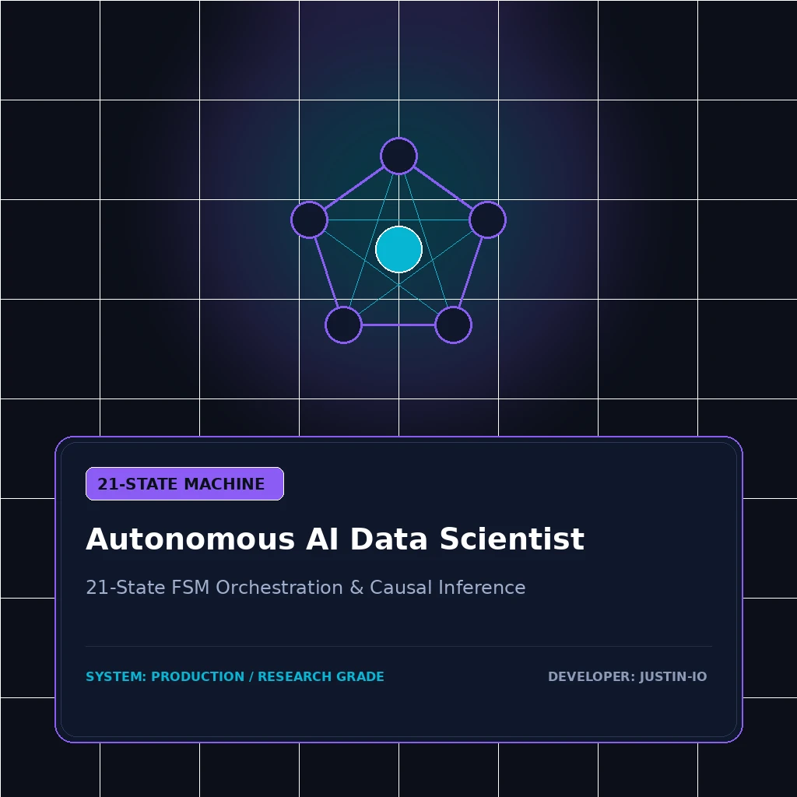

AUTONOMOUS AI / ANALYTICS ENGINEERING
Autonomous AI Data Scientist
A controlled analysis workflow that turns business questions into evidence-linked SQL, statistical investigation and reviewable reports. The system is designed to refuse unsupported questions rather than invent missing data.
Engineering breakdown Problem · architecture · evidence · limits
Problem
Text-to-SQL systems can select the wrong grain, create join fanout, mutate data or produce plausible explanations unsupported by the warehouse.
System design
A 21-state bounded workflow with a canonical semantic layer, SQL AST validation, hypothesis testing, an independent critic and human review checkpoints.
Architecture
Python, FastAPI, DuckDB and a React + TypeScript analyst workspace. SHA-256 dataset references bind generated claims to the data used for analysis.
Repository evidence
The committed TEST_MATRIX.md records 46 passing tests across 10 suites, covering warehouse generation, semantic validation, SQL safety, statistics, causal checks, evidence verification and API flows.
Scope limit
The bundled warehouse and scenarios are synthetic. Passing tests verify implemented code paths; they do not establish accuracy on external customer data or production business outcomes.